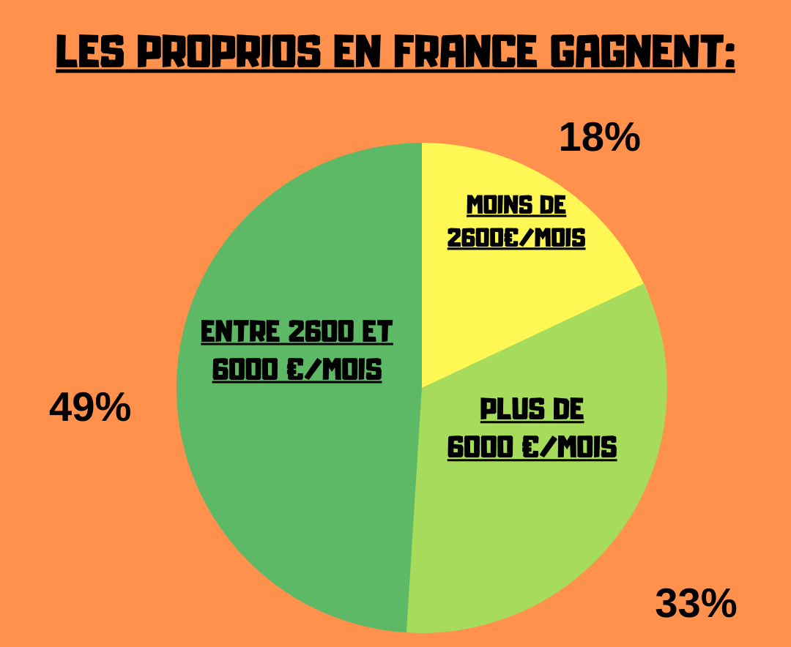
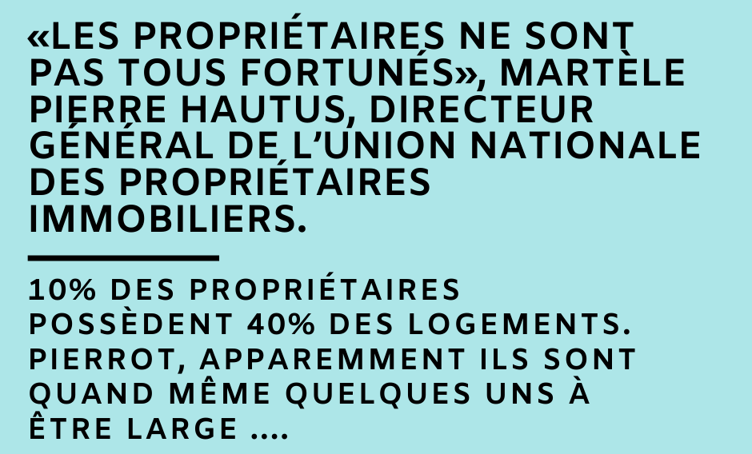
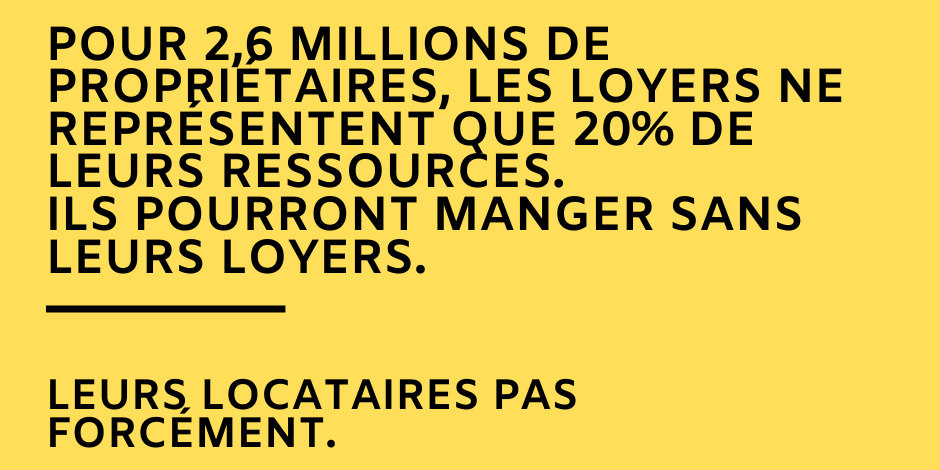
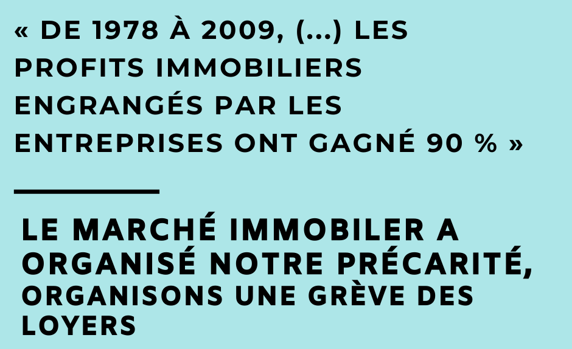
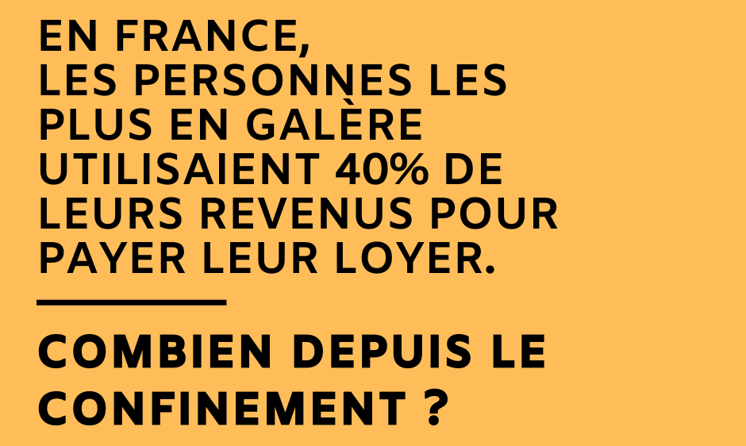
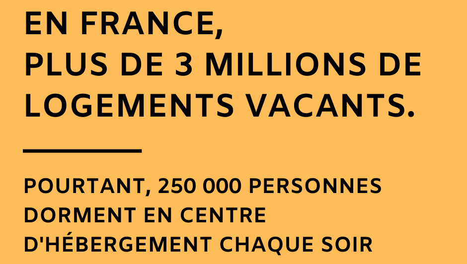

sociologiques
stats
voici des statistiques extraites par le groupe paye (pas) ton confinement
     sources
voici des sources de données sociologiques sur le logement en france :
- document de l'IRES qui étudie les impacts du confinement sur différentes personnes
- article de "inspiration de survie" sur la grève avec données sociologiques
- statistiques de l'INSEE sur les locataires et les propriétaires de 2000 à 2019
- OLAP observatoire des loyers de l'agglomération parisienne OLAP
- étude de 2019 du réseau des ADIL